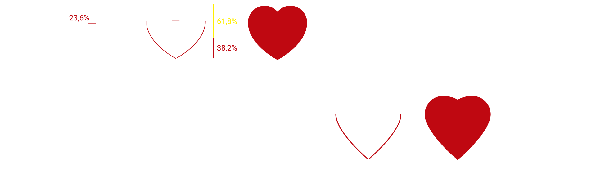
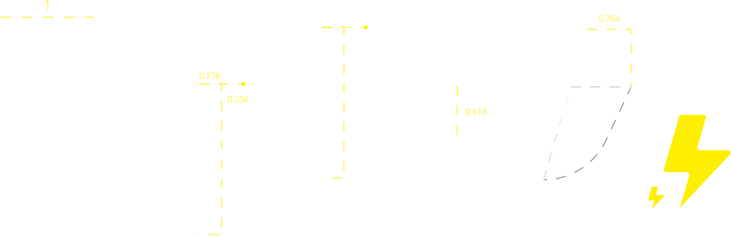
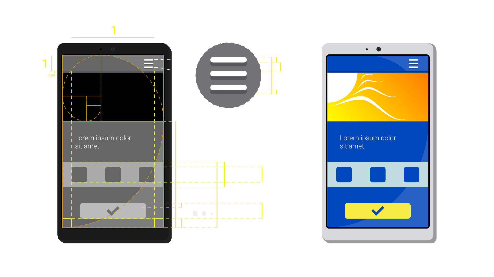

A verdade é que eu nunca fui ótimo em matemática e sempre fui péssimo em representar coisas por meio do desenho. Como um designer de web que busca ser flexível, parte do meu trabalho é criar interfaces, logos e ícones, que precisam ter harmonia entre si e também neles mesmos. Meu método mais importante para alcançar essa harmonia está na proporção áurea, um padrão frequentemente encontrado na natureza, estudado e utilizado há séculos (ou milênios) para a construção de obras estéticas.
O padrão também pode ser identificado pela relação de alguns números, que eu uso para dimensionar um elemento em relação a outro. A proporção pode trazer uma variedade de resultados quando se sabe utilizá-la - não que eu a use perfeitamente -, e tem me ajudado muito a trazer resultados mais satisfatórios e matematizados, o que eu acho bem legal. No fundo, todos os meus projetos são baseados em figuras geométricas básicas, que se relacionam dimensionalmente segundo os números da proporção de Fibonacci (0.618, 0.382, 0.236, 0.146, 0.9, entre outros).
Aqui estão algumas demonstrações de como eu uso o padrão para desenvolver interfaces, ícones e logos.
     